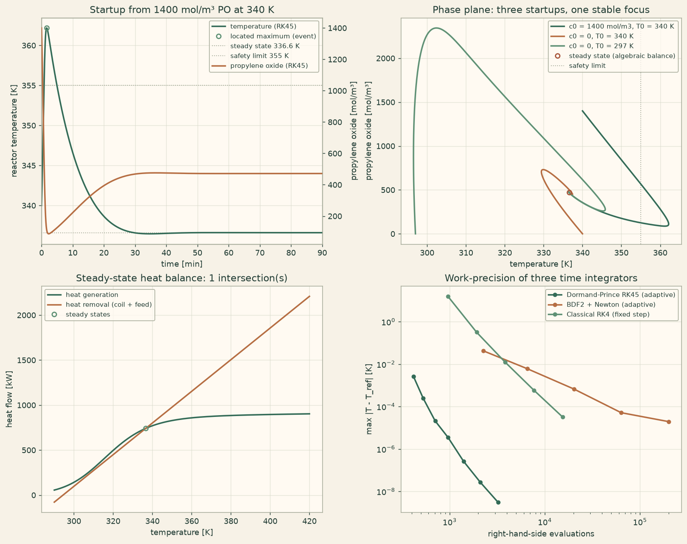

Docs › Examples › Startup of a continuous stirred-tank reactor
Reaction engineering · 0D
Startup of a continuous stirred-tank reactor
Starting up an exothermic propylene-glycol reactor: the temperature spike during startup, whether it crosses the safety limit, and the stable operating point.

What it computes
OneSimulation integrates the coupled species and energy balances of the stirred tank (Arrhenius kinetics, volume contraction, temperature-dependent heat of reaction, cooling coil) with adaptive Dormand-Prince RK45 with event location, BDF2 and classical RK4, for three startup conditions.
What it checks
The final state matches the independently solved steady state to 1e-11, the published steady state and peak temperature to about 0.1 %, the element and enthalpy balances close to round-off, and the linearised dynamics match the Jacobian eigenvalues.
The notebook
The complete notebook, cell by cell. Run it to produce the figures and the comparison printout.
Propylene glycol is produced by the acid-catalysed hydrolysis of propylene oxide (PO) with water (W) in a perfectly mixed tank reactor with a cooling coil; methanol (M) is fed as an inert co-solvent:
This is the classical startup problem of Fogler's Elements of Chemical Reaction Engineering (3rd ed., Example 9-4, 1999). The reactor is a single well-mixed control volume, so the model is genuinely zero-dimensional: every state is a function of time only. With the feed \(v_f\), the outflow \(v = v_f + V\sum_i R_iM_i/\rho_i\) (the liquid contracts slightly as glycol forms) and the species heat capacities \(C_{p,i}\), the balances are
with \(\Delta H_r(T)=\Delta H_r(T_\mathrm{ref})+\Delta C_p\,(T-T_\mathrm{ref})\) and the coil duty of a heat exchanger with cooling-water flow \(F_x\), \(Q_\mathrm{ext}=F_xC_{p,x}(T_x-T)\,[1-e^{-UA/(F_xC_{p,x})}]\).
Numerics. The five ODEs (four concentrations and the temperature) are integrated with OneSimulation's transient kernels: the adaptive Dormand-Prince Runge-Kutta 5(4) method with event location (used for the production runs), the variable-step BDF2 method with Newton iterations on a finite-difference Jacobian (dense LU solve), and the fixed-step classical Runge-Kutta method from the shared time-integrator registry. All three are compared on the same startup against a tight-tolerance reference.
Reference. (i) The steady state is solved independently from the algebraic balances (the species follow in closed form for a given \(T\), leaving one scalar heat balance whose roots are bracketed over the whole temperature range); (ii) the eigenvalues of the Jacobian at that steady state give its linear stability, the period and the decay rate of the startup oscillation, checked against the nonlinear response to a small perturbation; (iii) the integral C3-skeleton, inert and total-enthalpy balances must close; (iv) the published solution of this startup reports a steady state of about 472 mol/m\(^3\) and 337 K and a temperature overshoot to about 362 K, above the 355 K safety limit.
import numpy as np
from onesim.numerics.time import AdaptiveBDF, AdaptiveRungeKutta45, EventDefinition
from onesim.numerics.time import DEFAULT_TIME_INTEGRATOR_REGISTRY
from onesim.visualization import theme, plots
theme.set()Parameters
Reactor, feed, thermodynamic and coil data of the startup problem. The species order is propylene oxide, water, propylene glycol, methanol. Molar masses are built from standard atomic weights, so the reaction conserves mass exactly. The base startup begins with 1400 mol/m\(^3\) of propylene oxide in water at 340 K.
R_GAS = 8.314462618
pre_exponential = 4.71e9
activation_energy = 75.358e3
volume = 1.89
feed_flow = 3.47e-3
species = ("propylene oxide", "water", "propylene glycol", "methanol")
feed_concentration = np.array([2903.0, 36291.0, 0.0, 3629.0])
atomic = {"C": 12.011, "H": 1.008, "O": 15.999}
formula = ({"C": 3, "H": 6, "O": 1}, {"H": 2, "O": 1}, {"C": 3, "H": 8, "O": 2}, {"C": 1, "H": 4, "O": 1})
molar_mass = np.array([sum(atomic[e] * n for e, n in f.items()) for f in formula]) * 1e-3
density = np.array([830.0, 1000.0, 1036.0, 792.0])
heat_capacity = np.array([146.5, 75.4, 192.6, 81.6])
formation_enthalpy = np.array([-153.5e3, -286.1e3, -525.6e3, -238.6])
stoichiometry = np.array([-1.0, -1.0, 1.0, 0.0])
feed_temperature = 297.0
reference_temperature = 293.0
coolant_temperature = 289.0
coolant_flow = 126.0
coolant_heat_capacity = 75.4
exchanger_ua = 8441.0
safety_limit = 355.0
initial_water = 55273.0
end_time = 4.0 * 3600.0
reaction_enthalpy_ref = stoichiometry @ formation_enthalpy
reaction_heat_capacity = stoichiometry @ heat_capacity
contraction = stoichiometry @ (molar_mass / density)
coil_conductance = coolant_flow * coolant_heat_capacity * (
1.0 - np.exp(-exchanger_ua / (coolant_flow * coolant_heat_capacity)))
feed_heat_flow = feed_flow * (feed_concentration @ heat_capacity)
residence_time = volume / feed_flow
print(f"Reaction enthalpy at T_ref = {reaction_enthalpy_ref / 1e3:.1f} kJ/mol, "
f"Delta C_p = {reaction_heat_capacity:.1f} J/(mol K), contraction = {contraction * 1e6:.2f} cm^3/mol")
print(f"Effective coil conductance = {coil_conductance:.0f} W/K, residence time V/v_f = {residence_time:.0f} s")Geometry and mesh
The reactor is one perfectly mixed control volume of 1.89 m\(^3\): there is no spatial coordinate and therefore no mesh and no boundary. The inlet and the outlet enter the balances only through the feed and outflow terms, and the coil through \(Q_\mathrm{ext}\). The state vector is \(y=(c_\mathrm{PO}, c_\mathrm{W}, c_\mathrm{PG}, c_\mathrm{M}, T)\).
Model
The right-hand side implements the balances above exactly as written. The rate coefficient is Arrhenius, the reaction enthalpy follows from the formation enthalpies and the mean heat capacities, and the outflow includes the volume change of reaction.
def rate_coefficient(temperature):
return pre_exponential * np.exp(-activation_energy / (R_GAS * temperature))
def reactor_rhs(time, state):
concentration, temperature = state[:4], state[4]
rate = rate_coefficient(temperature) * concentration[0]
outflow = feed_flow + volume * contraction * rate
d_concentration = (feed_flow * feed_concentration - outflow * concentration) / volume + stoichiometry * rate
reaction_enthalpy = reaction_enthalpy_ref + reaction_heat_capacity * (temperature - reference_temperature)
heat = (-volume * reaction_enthalpy * rate
+ coil_conductance * (coolant_temperature - temperature)
+ feed_heat_flow * (feed_temperature - temperature))
d_temperature = heat / (volume * (concentration @ heat_capacity))
return np.concatenate([d_concentration, [d_temperature]])
class CountedRhs:
"""Wrap the right-hand side to count its evaluations (the work measure)."""
def __init__(self):
self.calls = 0
def __call__(self, time, state):
self.calls += 1
return reactor_rhs(time, state)
def initial_state(c_po, temperature):
return np.array([c_po, initial_water, 0.0, 0.0, temperature])
temperature_peak = EventDefinition("temperature maximum", lambda t, y: reactor_rhs(t, y)[4], direction=-1)
concentration_minimum = EventDefinition("PO minimum", lambda t, y: reactor_rhs(t, y)[0], direction=1)Solve
Production runs. The base startup and the two further initial conditions of the phase-plane study are integrated with the Dormand-Prince method at a relative tolerance of \(10^{-9}\); a 5 s step cap keeps the dense output smooth for the figure.
production = AdaptiveRungeKutta45(relative_tolerance=1e-9, absolute_tolerance=1e-9, maximum_step=5.0)
scenarios = {"c0 = 1400 mol/m3, T0 = 340 K": (1400.0, 340.0),
"c0 = 0, T0 = 340 K": (0.0, 340.0),
"c0 = 0, T0 = 297 K": (0.0, 297.0)}
runs = {}
for label, (c0, t0) in scenarios.items():
runs[label] = production.integrate(reactor_rhs, initial_state(c0, t0), 0.0, end_time, initial_step=0.1,
events=(temperature_peak, concentration_minimum))
base = runs["c0 = 1400 mol/m3, T0 = 340 K"]
print(f"Base startup: {base.accepted_steps} accepted / {base.rejected_steps} rejected steps")Reference run for the integrator comparison: Dormand-Prince at a relative tolerance of \(10^{-12}\) with a 0.5 s step cap, so that its cubic dense output is accurate to far below the errors being measured (also in the fast first minutes).
reference_run = AdaptiveRungeKutta45(relative_tolerance=1e-12, absolute_tolerance=1e-12, maximum_step=0.5).integrate(
reactor_rhs, initial_state(1400.0, 340.0), 0.0, end_time, initial_step=0.01)
def max_temperature_error(times, states):
return max(abs(states[i, 4] - reference_run.dense_state(t)[4]) for i, t in enumerate(times))Method comparison. The same startup is repeated with (a) Dormand-Prince RK45 at relative tolerances \(10^{-4}\ldots10^{-10}\), (b) variable-step BDF2 with Newton iterations at \(10^{-3}\ldots10^{-7}\) and (c) fixed-step classical RK4 with steps of 60 s down to 3.75 s. The error is the largest temperature deviation from the reference at the integrator's own output times; the work is the number of right-hand-side evaluations (for BDF2 these include the finite-difference Jacobians).
comparison = {"Dormand-Prince RK45 (adaptive)": [], "BDF2 + Newton (adaptive)": [], "Classical RK4 (fixed step)": []}
for tolerance in (1e-4, 1e-5, 1e-6, 1e-7, 1e-8, 1e-9, 1e-10):
counted = CountedRhs()
run = AdaptiveRungeKutta45(relative_tolerance=tolerance, absolute_tolerance=tolerance).integrate(
counted, initial_state(1400.0, 340.0), 0.0, end_time, initial_step=0.1)
comparison["Dormand-Prince RK45 (adaptive)"].append(
(tolerance, run.accepted_steps, counted.calls, max_temperature_error(run.times, run.states)))
for tolerance in (1e-3, 1e-4, 1e-5, 1e-6, 1e-7):
counted = CountedRhs()
run = AdaptiveBDF(order=2, relative_tolerance=tolerance, absolute_tolerance=tolerance).integrate(
counted, initial_state(1400.0, 340.0), 0.0, end_time, initial_step=0.1)
comparison["BDF2 + Newton (adaptive)"].append(
(tolerance, run.accepted_steps, counted.calls, max_temperature_error(run.times, run.states)))
rk4 = DEFAULT_TIME_INTEGRATOR_REGISTRY.resolve_id("classical_rk4")
for step in (60.0, 30.0, 15.0, 7.5, 3.75):
counted = CountedRhs()
state, times, states = initial_state(1400.0, 340.0), [0.0], [initial_state(1400.0, 340.0)]
for n in range(int(round(end_time / step))):
state = rk4.advance(state, lambda y, t: counted(t, y), n * step, step)
times.append((n + 1) * step)
states.append(state)
comparison["Classical RK4 (fixed step)"].append(
(step, len(times) - 1, counted.calls, max_temperature_error(times, np.asarray(states))))Independent steady state. For a given temperature the steady species balances are algebraic: the propylene-oxide balance is a quadratic in \(c_\mathrm{PO}\) (the outflow depends on the rate), and water, glycol and methanol follow directly. What remains is the scalar heat balance \(G(T)=\text{generation}(T)-\text{removal}(T)=0\). All its roots are bracketed on a fine temperature scan from 280 K to 520 K and refined by bisection.
def steady_species(temperature):
k = rate_coefficient(temperature)
roots = np.roots([volume * contraction * k, feed_flow + k * volume, -feed_flow * feed_concentration[0]])
roots = roots[np.isreal(roots)].real
c_po = roots[(roots >= 0.0) & (roots <= feed_concentration[0])][0]
rate = k * c_po
outflow = feed_flow + volume * contraction * rate
concentration = np.array([c_po, (feed_flow * feed_concentration[1] - rate * volume) / outflow,
rate * volume / outflow, feed_flow * feed_concentration[3] / outflow])
return concentration, rate
def heat_generation(temperature):
_, rate = steady_species(temperature)
return -volume * (reaction_enthalpy_ref + reaction_heat_capacity * (temperature - reference_temperature)) * rate
def heat_removal(temperature):
return coil_conductance * (temperature - coolant_temperature) + feed_heat_flow * (temperature - feed_temperature)
def heat_balance(temperature):
return heat_generation(temperature) - heat_removal(temperature)
scan = np.linspace(280.0, 520.0, 24001)
balance_scan = np.array([heat_balance(T) for T in scan])
brackets = np.where(np.sign(balance_scan[:-1]) != np.sign(balance_scan[1:]))[0]
steady_states = []
for i in brackets:
low, high = scan[i], scan[i + 1]
for _ in range(80):
middle = 0.5 * (low + high)
low, high = (middle, high) if np.sign(heat_balance(middle)) == np.sign(heat_balance(low)) else (low, middle)
temperature_ss = 0.5 * (low + high)
steady_states.append(np.concatenate([steady_species(temperature_ss)[0], [temperature_ss]]))
print(f"Steady states of the algebraic balance between 280 K and 520 K: {len(steady_states)}")
steady = steady_states[0]Linear stability. Central-difference Jacobian of the right-hand side at the steady state and its eigenvalues.
jacobian = np.zeros((5, 5))
for j in range(5):
h = 1e-6 * max(1.0, abs(steady[j]))
e = np.zeros(5)
e[j] = h
jacobian[:, j] = (reactor_rhs(0.0, steady + e) - reactor_rhs(0.0, steady - e)) / (2.0 * h)
eigenvalues, eigenvectors = np.linalg.eig(jacobian)
oscillatory = eigenvalues[np.argmax(np.abs(eigenvalues.imag))]Nonlinear response to small temperature perturbations (0.5 K and 0.05 K) versus the linearised solution exp(J t) delta built from the eigen-decomposition. The mismatch must shrink in proportion to the perturbation.
probe_times = np.linspace(0.0, 6000.0, 601)
linearisation_mismatch = {}
for size in (0.5, 0.05):
perturbation = np.array([0.0, 0.0, 0.0, 0.0, size])
perturbed = AdaptiveRungeKutta45(relative_tolerance=1e-11, absolute_tolerance=1e-11, maximum_step=10.0).integrate(
reactor_rhs, steady + perturbation, 0.0, 6000.0, initial_step=0.1)
modal = np.linalg.solve(eigenvectors, perturbation)
linear_T = np.array([(eigenvectors @ (modal * np.exp(eigenvalues * t))).real[4] for t in probe_times])
nonlinear_T = np.array([perturbed.dense_state(t)[4] - steady[4] for t in probe_times])
linearisation_mismatch[size] = np.max(np.abs(nonlinear_T - linear_T)) / sizeComparison with the reference
All checks below are printed next to their reference values.
final = base.states[-1]
print("\nSteady state (t = 4 h simulated vs independent algebraic balance):")
for i, name in enumerate(species):
print(f" c_{name:17s} {final[i]:11.3f} vs {steady[i]:11.3f} mol/m^3 "
f"rel. dev. {abs(final[i] - steady[i]) / steady[i]:.2e}")
print(f" T {final[4]:11.4f} vs {steady[4]:11.4f} K "
f"rel. dev. {abs(final[4] - steady[4]) / steady[4]:.2e}")
peaks = {label: max(event.state[4] for event in run.events if event.event_id == "temperature maximum")
if any(event.event_id == "temperature maximum" for event in run.events) else run.states[0, 4]
for label, run in runs.items()}
peak_event = next(event for event in base.events if event.event_id == "temperature maximum")
dip_event = next(event for event in base.events if event.event_id == "PO minimum")
print("\nPublished solution of this startup vs OneSimulation:")
print(f" steady c_PO {final[0]:8.1f} mol/m^3 vs 472 mol/m^3 rel. dev. {abs(final[0] - 472) / 472:.2%}")
print(f" steady T {final[4]:8.2f} K vs 337 K rel. dev. {abs(final[4] - 337) / 337:.2%}")
print(f" peak T (event) {peak_event.state[4]:8.2f} K at t = {peak_event.time / 60:.2f} min vs about 362 K "
f"rel. dev. {abs(peak_event.state[4] - 362) / 362:.2%}")
print(f" PO minimum {dip_event.state[0]:8.1f} mol/m^3 at t = {dip_event.time / 60:.2f} min")
for label, peak in peaks.items():
verdict = "exceeds" if peak > safety_limit else "stays below"
print(f" {label:30s}: maximum T = {peak:7.2f} K, {verdict} the {safety_limit:.0f} K safety limit")
print("\nLinear stability of the steady state (eigenvalues of the Jacobian, 1/s):")
for value in sorted(eigenvalues, key=lambda z: z.real):
print(f" {value.real: .6f} {value.imag:+.6f} i")
print(f" all real parts negative -> asymptotically stable; oscillatory pair: period "
f"{2 * np.pi / abs(oscillatory.imag) / 60:.1f} min, decay time {-1 / oscillatory.real / 60:.1f} min")
three_eigen_value = -(feed_flow + volume * contraction * rate_coefficient(steady[4]) * steady[0]) / volume
print(f" triple real eigenvalue vs -v/V (dilution of the reaction invariants): "
f"{np.sort(eigenvalues.real)[-1]:.6e} vs {three_eigen_value:.6e}")
arrhenius_sensitivity = activation_energy / (R_GAS * steady[4] ** 2)
for size, mismatch in linearisation_mismatch.items():
print(f" {size:4.2f} K perturbation: max |nonlinear - linearised| temperature response = {mismatch:.2e} of the "
f"perturbation (second-order estimate E*dT/(R*T^2) = {arrhenius_sensitivity * size:.1e})")
print(f" ratio of the two mismatches: {linearisation_mismatch[0.5] / linearisation_mismatch[0.05]:.2f} "
f"(10 for a correct linearisation)")
grid = np.linspace(0.0, end_time, 14401)
dense = np.array([reference_run.dense_state(t) for t in grid])
rate_grid = rate_coefficient(dense[:, 4]) * dense[:, 0]
outflow_grid = feed_flow + volume * contraction * rate_grid
def simpson(values):
h = grid[1] - grid[0]
return h / 3.0 * (values[0] + values[-1] + 4.0 * values[1:-1:2].sum() + 2.0 * values[2:-1:2].sum())
skeleton = dense[:, 0] + dense[:, 2]
skeleton_flow = feed_flow * (feed_concentration[0] + feed_concentration[2]) - outflow_grid * skeleton
skeleton_residual = volume * (skeleton[-1] - skeleton[0]) - simpson(skeleton_flow)
inert_flow = feed_flow * feed_concentration[3] - outflow_grid * dense[:, 3]
inert_residual = volume * (dense[-1, 3] - dense[0, 3]) - simpson(inert_flow)
enthalpy = lambda T: heat_capacity * (np.asarray(T)[..., None] - reference_temperature) + formation_enthalpy
total_enthalpy = volume * np.sum(dense[:, :4] * enthalpy(dense[:, 4]), axis=1)
coil_duty = coil_conductance * (coolant_temperature - dense[:, 4])
enthalpy_flow = (feed_flow * feed_concentration @ enthalpy(feed_temperature)
- outflow_grid * np.sum(dense[:, :4] * enthalpy(dense[:, 4]), axis=1) + coil_duty)
enthalpy_residual = total_enthalpy[-1] - total_enthalpy[0] - simpson(enthalpy_flow)
print("\nIntegral balances over 4 h (accumulation - net inflow, relative to the throughput):")
print(f" C3 skeleton PO+PG : {skeleton_residual:+.3e} mol "
f"({abs(skeleton_residual) / (feed_flow * feed_concentration[0] * end_time):.1e} of the PO fed)")
print(f" inert methanol : {inert_residual:+.3e} mol "
f"({abs(inert_residual) / (feed_flow * feed_concentration[3] * end_time):.1e} of the methanol fed)")
print(f" total enthalpy : {enthalpy_residual:+.3e} J "
f"({abs(enthalpy_residual) / simpson(np.abs(coil_duty)):.1e} of the heat removed by the coil)")
print("\nTime-integrator comparison (max |T - T_ref| over the run):")
for method, rows in comparison.items():
print(f" {method}")
for control, steps, calls, error in rows:
label = f"dt {control:6.2f} s" if "fixed step" in method else f"tol {control:.0e}"
print(f" {label:14s} steps {steps:6d} rhs evaluations {calls:7d} error {error:.2e} K")
rk4_rows = comparison["Classical RK4 (fixed step)"]
orders = [np.log2(a[3] / b[3]) for a, b in zip(rk4_rows[:-1], rk4_rows[1:])]
print(" observed order of classical RK4 on step halving (60 s is too coarse for the first minutes):",
" ".join(f"{p:.2f}" for p in orders))Figure
dense_times = np.linspace(0.0, end_time, 4001)
zoom_times = np.linspace(0.0, 5400.0, 2701)
base_dense = np.array([base.dense_state(t) for t in zoom_times])
trajectories = {label: np.array([run.dense_state(t) for t in dense_times]) for label, run in runs.items()}
temperature_axis = np.linspace(290.0, 420.0, 600)
fig = plots.figure(2, 2, size=(12, 9.5))
plots.line(zoom_times / 60, {"temperature (RK45)": base_dense[:, 4]}, right={"propylene oxide (RK45)": base_dense[:, 0]},
points={"located maximum (event)": ([peak_event.time / 60], [peak_event.state[4]])},
hlines={f"steady state {steady[4]:.1f} K": steady[4], "safety limit 355 K": safety_limit}, xlimits=(0, 90),
xlabel="time [min]", ylabel="reactor temperature [K]", right_label="propylene oxide [mol/m³]",
title="Startup from 1400 mol/m³ PO at 340 K", legend="upper right", ax=fig[0])
plots.line(y={label: (path[:, 4], path[:, 0]) for label, path in trajectories.items()},
points={"steady state (algebraic balance)": ([steady[4]], [steady[0]])},
vlines={"safety limit": safety_limit}, xlabel="temperature [K]", ylabel="propylene oxide [mol/m³]",
title="Phase plane: three startups, one stable focus", legend="upper right", ax=fig[1])
plots.line(temperature_axis, {"heat generation": [heat_generation(T) / 1e3 for T in temperature_axis],
"heat removal (coil + feed)": [heat_removal(T) / 1e3 for T in temperature_axis]},
points={"steady states": ([state[4] for state in steady_states], [heat_removal(state[4]) / 1e3 for state in steady_states])},
xlabel="temperature [K]", ylabel="heat flow [kW]",
title=f"Steady-state heat balance: {len(steady_states)} intersection(s)", legend="upper left", ax=fig[2])
plots.line(y={method: (np.array(rows)[:, 2].astype(float), np.array(rows)[:, 3].astype(float)) for method, rows in comparison.items()},
markers=True, scale="loglog", xlabel="right-hand-side evaluations", ylabel="max |T - T_ref| [K]",
title="Work-precision of three time integrators", legend="upper right", ax=fig[3])
plots.show()Going further
Lower the coolant flow or raise the feed temperature and watch the heat-balance panel: when the generation curve becomes tangent to the removal line the reactor develops three steady states, and the startup trajectory decides between ignition and extinction; the eigenvalue check then flags the middle state as a saddle. The work-precision panel shows why a high-order explicit method is the right default for this mildly stiff, smooth problem, whereas the BDF route pays for its stability with Newton solves; a much faster reaction (larger pre-exponential factor) reverses that ranking.